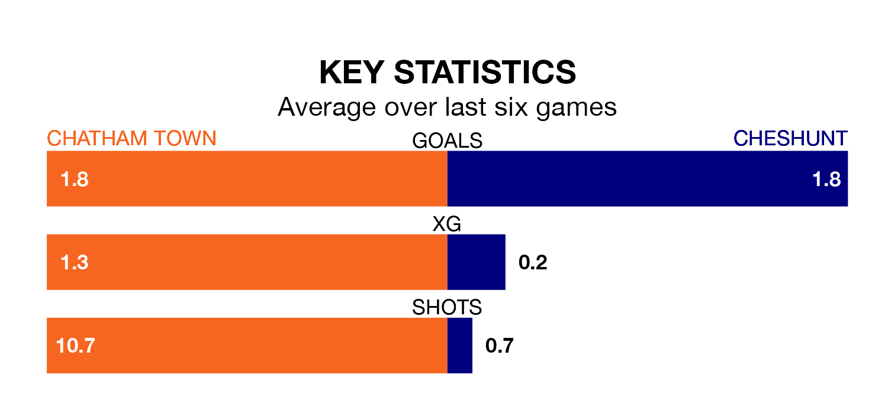

Chatham Town host Cheshunt in Saturday's match looking to bounce back from defeat last time out in Isthmian Premier Division.
Chatham, who sit second in the league after 24 games, fell to a 2-1 away defeat to Bognor Regis Town on January 6.
They face a Cheshunt side who also lost their last match, a 3-2 defeat to Hastings United, and who sit 19th in the table.
With 45 goals in 24 games so far this season, Chatham are the league's joint-second-highest scorers with 1.9 goals per game. And they are conceding fewer than average, letting in 31 goals at a rate of 1.3 per game.
Cheshunt, meanwhile, are below average scorers, with 1.4 goals per game, compared to a league average of 1.6. They have conceded 1.9 goals per game.
Town are in mixed form in Isthmian Premier Division, with three wins and a draw from their last six games.
With a win and a draw over that period, the visitors' form is much worse – they have taken four points from 18, compared to the home team's 10.
Updated: 13:38 (UTC), 10/01/24